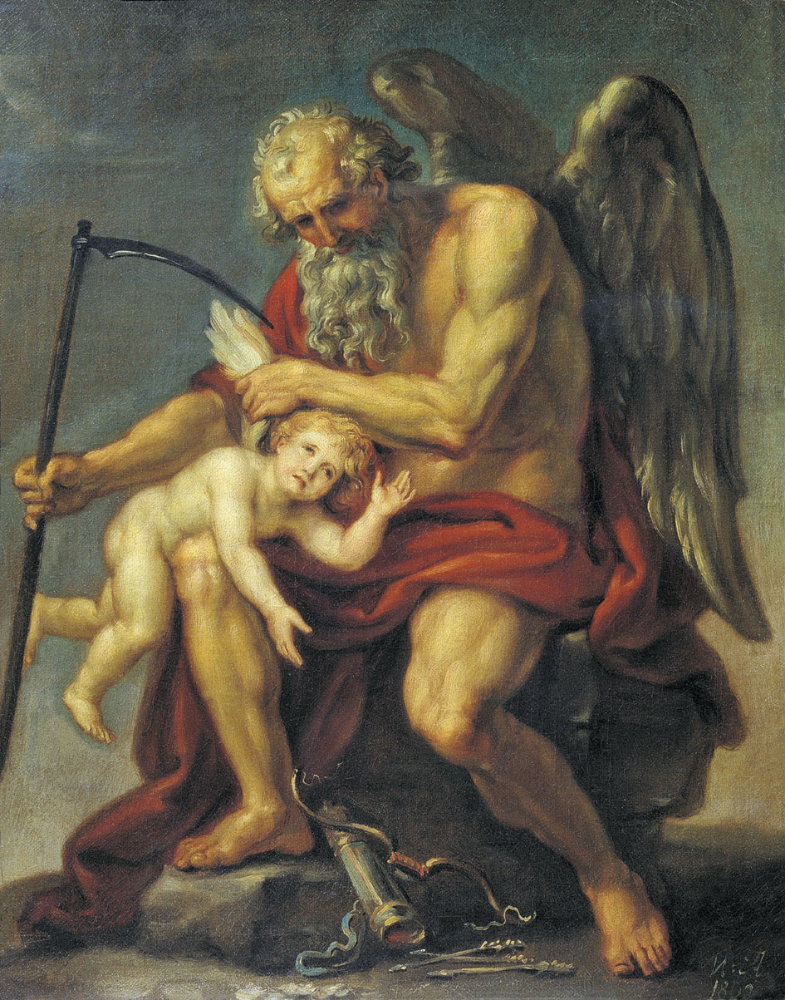
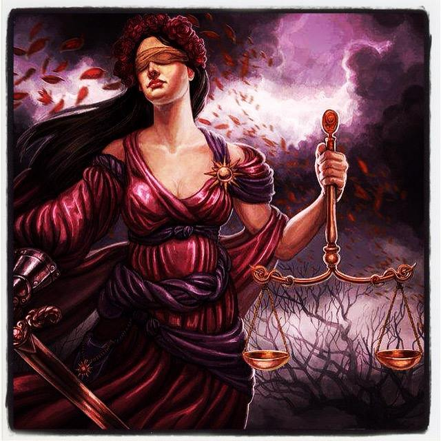

Древнегреческая мифология
Древнегре́ческая мифоло́гия (мифология Древней Греции) — мифология древних греков, тесно переплетающаяся с их религией. Оказала огромное влияние на развитие культуры и искусства всего мира и положила начало бесчисленному множеству религиозных представлений о человеке, героях и богах.
Происхождение богов
Известный румыно-франко-американский исследователь истории религии Мирча Элиаде даёт следующую периодизацию древнегреческой религии.
- 30 — 15 вв. до н. э. — крито-минойская религия.
- 15 — 11 вв. до н. э. — архаическая древнегреческая религия.
- 11 — 6 вв. до н. э. — олимпийская религия.
- 6 — 4 вв. до н. э. — философско-орфическая религия (Орфей, Пифагор, Платон).
- 3 — 1 вв. до н. э. — религия эллинистической эпохи.
Зевс, согласно легенде, родился на Крите от Реи и титана Крона (др.-греч. Χρόνος или Кронос означает время), а Минос, по которому названа крито-минойская цивилизация, считался его сыном. Однако, та мифология, которую мы знаем, и которую потом переняли римляне, органически связана с греческой народностью. О возникновении этой народности можно говорить с приходом первой волны ахейских племен в начале II тыс. до н. э. В 1850 году до н. э. уже были построены Афины, названные по имени богини Афины. Если принять эти соображения, то религия древних греков возникла где-то в районе 2000 года до н. э.
Религиозные представления древних греков
Религиозные представления и религиозный быт древних греков находились в тесной связи со всей их исторической жизнью. Уже в древнейших памятниках греческого творчества ясно сказывается антропоморфический характер греческого политеизма, объясняющийся национальными особенностями всего культурного развития в этой сфере; конкретные представления, вообще говоря, преобладают над абстрактными, как и в количественном отношении человекоподобные боги и богини, герои и героини преобладают над божествами абстрактного значения (которые, в свою очередь, получают антропоморфические черты). В том или другом культе, у различных писателей или художников с тем или иным божеством соединяются разные общие или мифологические (и мифографические) представления.
Мы знаем разные сочетания, иерархии генеалогии божественных существ — «Олимп», различные системы «двенадцатибожия» (например, в Афинах — Зевс, Гера, Посейдон, Аид, Деметра, Аполлон, Артемида, Гефест, Афина, Арес, Афродита, Гермес). Подобные соединения объясняются не из творческого только момента, но и из условий исторической жизни эллинов; в греческом политеизме можно проследить и позднейшие наслоения (восточные элементы; обоготворение — даже при жизни).
Можно различить культы государственные и частные. Всепоглощающее значение государства сказалось и в религиозной сфере. Античный мир, вообще говоря, не знал ни «внутренней церкви», как царства не от мира сего, ни церкви как государства в государстве: «церковь» и «государство» были в нём понятиями, поглощающими или обусловливающими друг друга, и, например, жрец был тот же государственный магистрат.
Профессор А. Лосев выделял четыре основных этапа в развитии мифологии:
- миф «сам по себе», или так называемая «наивная мифология», уже у Гомера получившая некоторую рефлективную обработку;
- миф как гилозоистическое мировоззрение, воспринимающее мир в качестве одушевлённого (но не антропоморфного) тела, управляемого некими высшими законами (силами), нашедшее своё максимальное выражение в период греческой классики;
- миф как обоснование внутренне спокойной и самодовлеющей личности во времена раннего эллинизма (стоики, эпикурейцы, скептики);
- реставрация мифа путём логики или диалектики, где его герои и сюжеты трансформируются в абстрактные категории (неоплатонизм позднего эллинизма).
В греческой мифологии нельзя не признать и более поздние наслоения, особенно во всей внешней форме мифов (как они дошли до нас), хотя их не всегда можно определить исторически, как не всегда можно выделить чисто религиозную часть мифов. Под этой оболочкой кроются и общеарийские элементы, но их часто столько же трудно выделить от специально греческих, как и вообще определить начало чисто греческой культуры. Не менее трудно сколько-нибудь точно выяснить основное содержание разных эллинских мифов, несомненно крайне сложное. Природа с её свойствами и явлениями играла тут большую роль, но, может быть, преимущественно служебную; наряду с этими естественноисторическими моментами следует признавать и моменты историко-этические (так как боги вообще жили не иначе и не лучше, чем люди).
Списки богов и мифологических существ
Списки богов и генеалогия отличаются у разных античных авторов. Представленные ниже списки компилятивны.
Первое поколение богов
Первое поколение богов
- Сначала существовал Хаос
- От Хаоса родились Нюкта/Никата/Никта (Ночь, Мгла), Эреб/Скотос (Мрак); Гея (Земля), Тартар (Бездна) и Уран (Небо).
Второе поколение богов
Дети Нюкты и Эреба — Эфир (Воздух) и Гемера (День); братья-близнецы Гипнос (Сон) и Танатос (Смерть), Эрос (Любовь); Керы (Несчастья), Мойры (Судьба), Мом (Злословие и Глупость), Немезида (Возмездие), Эрида (Раздор), Эринии (Мщение); Ата и Апата (обман); Лисса (Бешенство, Безумие).
Дети Геи — Понт (внутреннее Море), Кето (владычица морских чудовищ), Нерей (спокойное море), Тавмант (морские чудеса), Форкий (страж моря), Эврибия (морская сила), титаны и титаниды, гекатонхейры и гиганты.
Титаны
Титаны:
- Гиперион
- Иапет
- Кей
- Криос
- Кронос
- Океан (персонификация мифологического мирового океана)

Титаниды:
- Мнемосина
- Рея
- Тейя
- Тефида
- Феба
- Фемида

Младшее поколение:
- Прометей
- Атлас
- Гелиос (персонификация солнца)
- Лето
- Менетий
- Астерий
- Селена (персонификация луны)
- Электра
- Эос (персонификация утренней зари)
- Эпиметей
- Ихтиония
- Кратос
Музы
- Каллиопа — муза эпической поэзии
- Клио — муза истории в древнегреческой мифологии
- Мельпомена — муза трагедии
- Полигимния — муза торжественных гимнов
- Терпсихора — муза танца
- Талия — муза комедии и лёгкой поэзии
- Урания — муза астрономии
- Эвтерпа — муза лирической поэзии и музыки
- Эрато — муза любовной поэзии